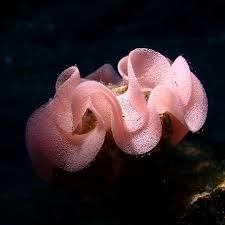

LIFE CYCLE
Depending on the species, nudibranchs can live from a few weeks to a year.
Nudibranchs are also hermaphroditic.
They have a set of reproductive organs for both sexes, but they cannot fertilize themselves. Mating usually takes a few minutes, and involves a dance-like courtship. Nudibranchs typically deposit their eggs within a gelatinous spiral, which is often described as looking like a ribbon.
The number of eggs varies; it can be as few as just 1 or 2 eggs or as many as an estimated 25 million . The eggs contain toxins from sea sponges as a means of deterring predators. After hatching, the infants look almost identical to their adult counterparts, albeit smaller. Infants may also have fewer cerata.
Fun fact:
They were once recorded to have made sounds like the ticking of a clock, but there is no actual proof it!